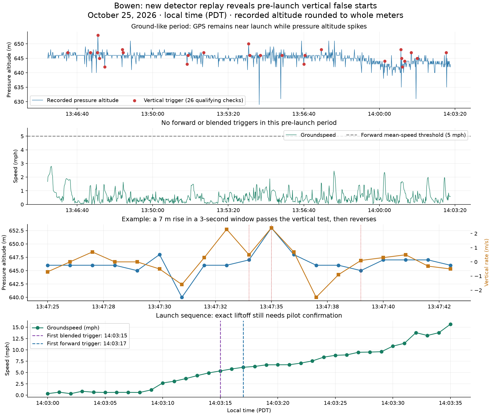

Replayed the committed 2431d929 C++ FlightAutoStart implementation, with no firmware modifications. All times October 25, 2026, PDT.
| Track | Result |
|---|---|
| Bowen · 01 (1) | First vertical trigger 13:46:15, well before the apparent launch sequence around 14:03:10–25. 26 qualifying checks in the provisional ground period; 17 have at least 4 m pressure change. Forward and blended paths first trigger at 14:03:17 and 14:03:15, respectively. |
| Scott · 01 | 51-second ground-like record: no trigger in the evaluable data. |
| Scott · 02 | Already moving at about 20 mph when recording begins at 14:03:37. Forward trigger 14:03:42, after 4.62 seconds of detector uptime. This is a recording-coverage limit, not a measured launch delay. |
Consequence: the vertical-only 3 m / 3 s rule is not validated by this expanded dataset. Bowen's prelaunch pressure spikes and same-sign vertical-rate estimates satisfy it. The recorded 7–17 m spikes show this is more than a borderline whole-meter rounding effect. Their cause remains unknown.

Coverage: 8,847 updates, with identical decisions after reflecting altitude and vertical-rate signs. The runner continues assessing windows after its first trigger to expose later qualifying windows; counts are not distinct flight logs.
Replay limits: all three headers report firmware v0.2.4-968, hardware v3.2.7, and contain 30 pre-start speed/climb samples (−29 s through zero). They do not contain pre-start pressure altitude or GPS positions. B-record pressure altitude is truncated to whole meters and VAR to 0.1 m/s; post-start speed comes from GL diagnostics. Full pre-start decisions and subsecond timing cannot be recovered. Barometer validity is approximated using the available CV diagnostic (which refers to the filtered climb signal); raw-altitude freshness and the new average-climb validity flag were not recorded. Window timing uses actual recorded uptime; displayed times use associated GPS B records. UI/summary inhibition and auto-stop lifecycle are not being replayed.
Exact liftoff in Bowen's launch sequence remains unconfirmed. No changes have been made to firmware or detector thresholds. Next step: investigate the pressure spikes and evaluate corroboration/persistence or robust pressure filtering before further tuning.
Inputs: unknown hardware/2026-10-25-XLV-000-01 (1).igc, ...-01.igc, ...-02.igc. Detailed windows: CSV. Summary: JSON.